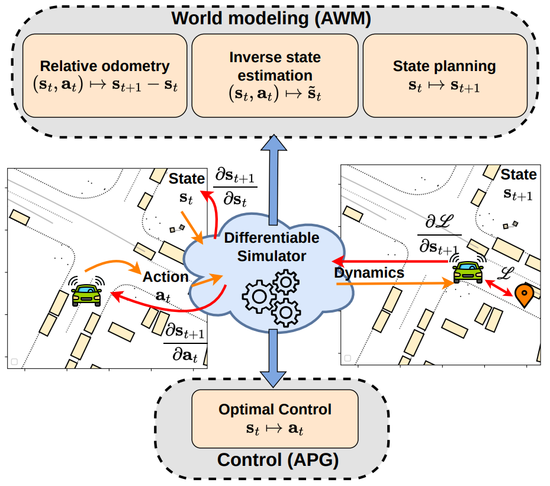
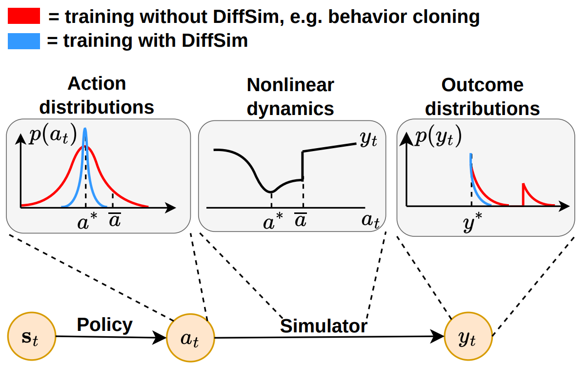
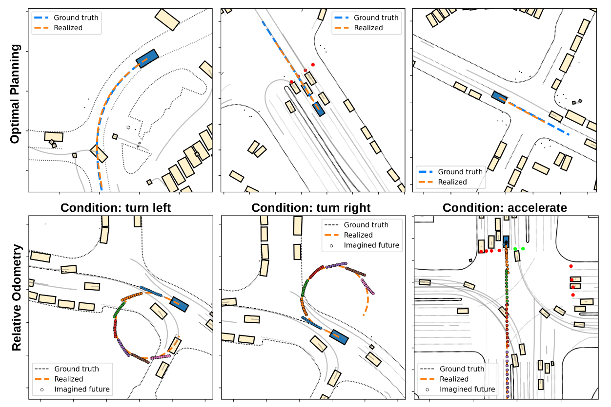
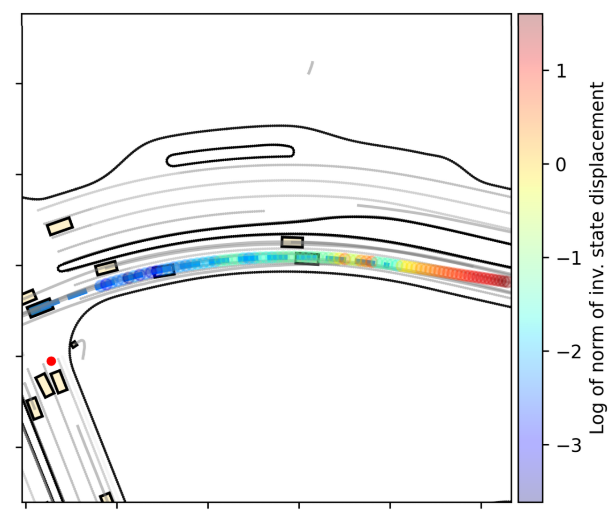

End-to-end control, planning, and search via differentiable physics

tl;dr
We embed the simulator's differentiable dynamics into the computation graph of different world-models to learn predictive,
prescriptive, and counterfactual state predictors efficiently. DiffSim lets us solve these inverse/what-if problems without trial-and-error
search.
Differentiable simulators represent an environment's dynamics as a differentiable function. Within robotics and autonomous driving, this property is used in Analytic Policy Gradients (APG), which relies on backpropagating through the dynamics to train accurate policies for diverse tasks. Here we show that differentiable simulation also has an important role in world modeling, where it can impart predictive, prescriptive, and counterfactual capabilities to an agent. Specifically, we design three novel task setups in which the differentiable dynamics are combined within an end-to-end computation graph not with a policy, but a state predictor. This allows us to learn relative odometry, optimal planners, and optimal inverse states. We collectively call these predictors Analytic World Models (AWMs) and demonstrate how differentiable simulation enables their efficient, end-to-end learning. In autonomous driving scenarios, they have broad applicability and can augment an agent's decision-making beyond reactive control.
Compared to control, where the focus is on the prediction of actions,
world modeling is concerned with the prediction of states. This is a rich and nuanced setting that includes next-states resulting from an action sequence,
desirable states not conditioned on any actions, and counterfactual states answering "what-if" questions.
All of these require understanding the world's dynamics, which is where differentiable simulation comes in. Hence, when applied to world modeling,
DiffSim enables the backpropagation of gradients through the dynamics and into the world predictors.

DiffSim is useful because it embeds the environment's dynamics into the training loop. Consider a setting in which the goal is to
learn an action such that after execution in the simulator, a loss outcome is minimal. Behavior cloning works by directly supervising the prediced action
without regards to the dynamics. Even though the model learns a distribution centered on the right action (red, left), if the dynamics are nonlinear,
for some of the action values an undesirably high loss will be obtained. DiffSim methods compute the loss directly in the outcome space, considering the dynamics.
As a result, the learned action distribution is tighter and the obtained loss is smaller. This pattern holds also when learning world models.
The concept of a world model is nuanced, as there are different ways to understand the effect of one's own actions.
We formulate three task setups related to world modeling.

We evaluate in Waymax, over the Waymo Open Motion Dataset, with predictive, prescriptive, and counterfactual AWMs. First, consider the prescriptive model, also called a planner because it imagines the next desirable state which the agent should reach. The top row shows different scenes
in which the ego-vehicle drives by imagining the next desired state and using the environment's inverse kinematics to obtain the action that reaches it. The evaluation shows that
our agent can drive just as well when predicting desired next state, as when predicting low-level actions.
Second, the bottom row in the above figure shows qualitative predictions from the predictive world model, which is a next-state predictor. This world model allows the agent to imagine the trajectory resulting from a given action sequence.
We can manually set the actions to represent a left or right turn, or straight acceleration. As the agent is executing these actions in the simulator, it imagines the next one second of its motion, at different points in time
(shown as multiple sets of different-colored points). The imagined trajectory closely aligns with the real, executed trajectory. The agent is able to imagine its future motion accurately.

Third, to demonstrate its counterfactual capabilities, we train a predictor that given the current state and an action, estimates an alternative state in which this action would
have been optimal (see full paper for details). This is still a form of world modeling and differentiable simulation allows us to efficiently find this state. Once estimated, the
agent can then use it as a confidence metric for its action. If this alternative state is far from the current one, it means the current action is not optimal. Based on this,
in the figure above we color the trajectory according to the agent's confidence in its actions. In this scenario the agent over-accelerates and deviates from the expert trajectory.
As a result, the displacement from the counterfactual predictor increases, and similarly, its confidence decreases.
@inproceedings{nachkov2025unlocking,
title={Unlocking Efficient Vehicle Dynamics Modeling via Analytic World Models},
author={Nachkov, Asen and Paudel, Danda Pani and Zaech, Jan-Nico and Scaramuzza, Davide and Van Gool, Luc},
booktitle={Proceedings of the AAAI Conference on Artificial Intelligence},
year={2026}
}